一款产品：开发-上线 两套环境！应用环境，应用配置
开发—运维：版本更新导致服务不可用，对于运维来说压力巨大
环境配置十分麻烦，每一个机器都要部署环境（集群Redis、ES、Hadoop…）
发布一个项目，项目与环境一起打包发布。在服务器配置一个应用环境配置麻烦，不能跨平台
Docker给以上问题提出了解决方案：python—py环境—打包项目+环境（镜像）—Docker仓库—下载镜像—直接运行即可
2010年，美国成立了一家dotCloud的公司，做一些pass的云计算服务。该公司将自己的技术（容器化技术）命名就是Docker，Docker刚刚诞生的时候并没有引起行业注意。2013年，dotCloud就将该技术开源。在开源之后，Docker每月都会更新一个版本，2014年4月9日，Docker1.0发布
Docker对于虚拟机技术非常轻
虚拟机：在windows中装一个Vmware，通过这个软件我们可以虚拟出一台或多台电脑。（虚拟机也属于虚拟化技术）
容器：容器技术也进行隔离，它仅安装最核心的环境
官网：[Docker官网][https://www.docker.com/]
文档地址：[Docker文档][https://docs.docker.com/]
仓库地址：[Docker仓库][https://hub.docker.com/]
容器化技术不是模拟的一个完整的操作系统
传统模型：
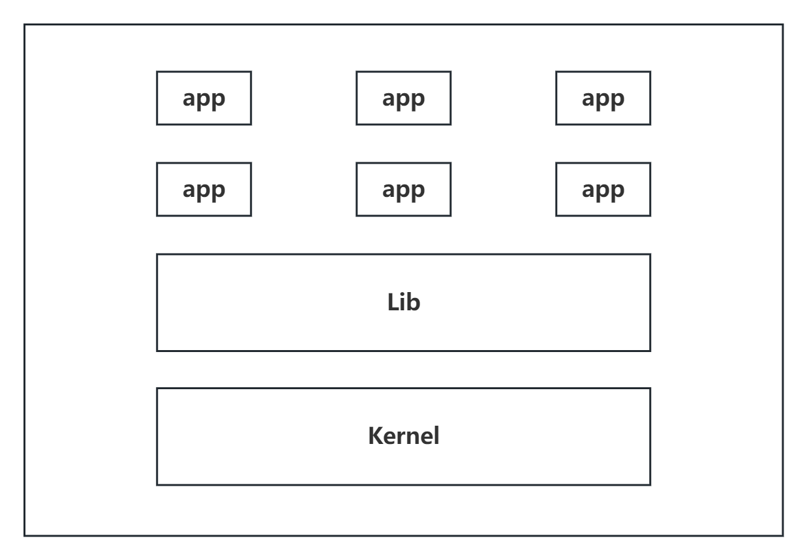
Docker模型：
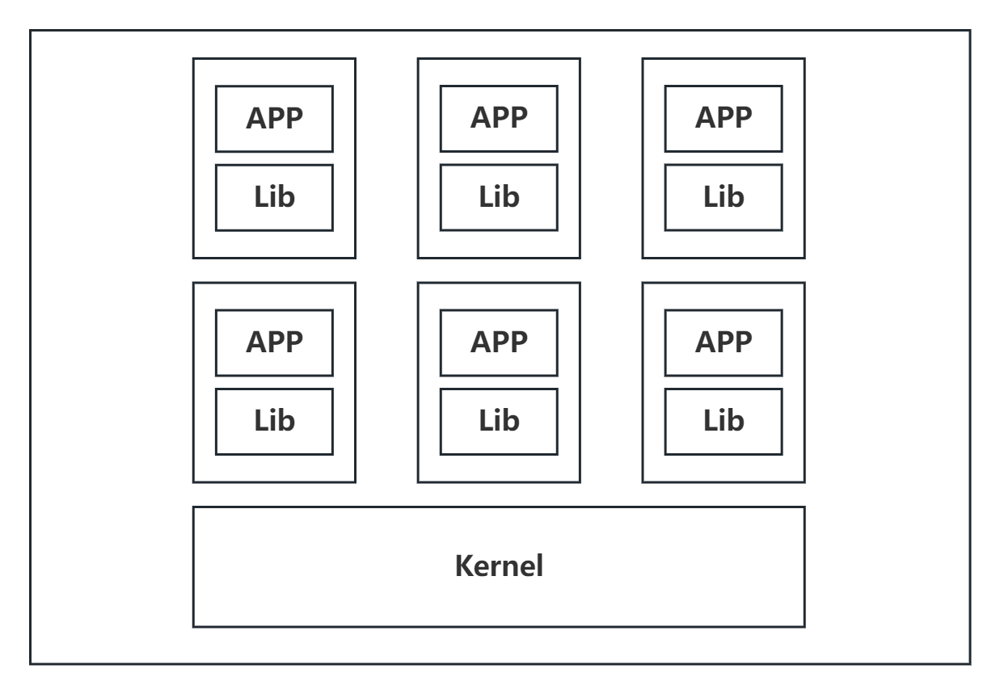
比较Docker和虚拟机技术的不同：
DevOps（开发、运维）
应用更快的交付和部署、
传统：一堆帮助文档，安装程序
Docker：打包镜像发布测试，一键运行
更便捷的升级和扩缩容
使用Docker之后，我们部署应用就和搭积木一样
项目打包为一个镜像
更简单的系统运维
在容器化之后，我们开发，测试环境高度一致
更高效的计算资源利用
Docker是内核级别的虚拟化，可以在一个物理机上运行很多容器实例，服务器性能可以被压榨到极致
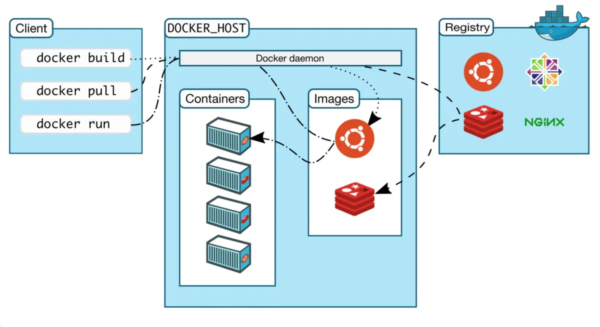
镜像（image）：
Docker就类似一个模板，可以通过这个模板来创建容器服务，tomcat镜像->run->tomcat01容器（提供服务），通过这个镜像可以创建多个容器（最终服务运行或者项目运行就是在这个容器中）
容器（container）：
Docker利用容器技术，独立运行一个或者一组应用，通过镜像创建
启动、停止、删除，基本命令
目前就可以把这个容器理解为一个简易的Linux系统
仓库（repository）：
仓库就是存放镜像的地方
仓库分为公有仓库和私有仓库
Docker Hub、阿里云、华为云…（配置镜像加速）
前期准备：Linux基础、CentOS7.x
帮助文档：按照帮助文档的安装流程，找到对应的版本进行安装
systemctl start dockerdocker run hello-worlddocker images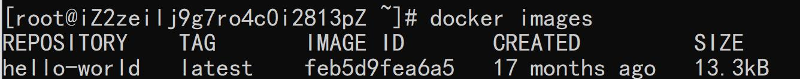
卸载Docker：
yum remove ...rm -rf /var/lib/docker在阿里云控制台中查看容器镜像服务-镜像加速器
sudo mkdir -p /etc/docker
sudo tee /etc/docker/daemon.json <<-'EOF'
{
"registry-mirrors": ["https://19s9qgd0.mirror.aliyuncs.com"]
}
EOF
sudo systemctl daemon-reload
sudo systemctl restart docker
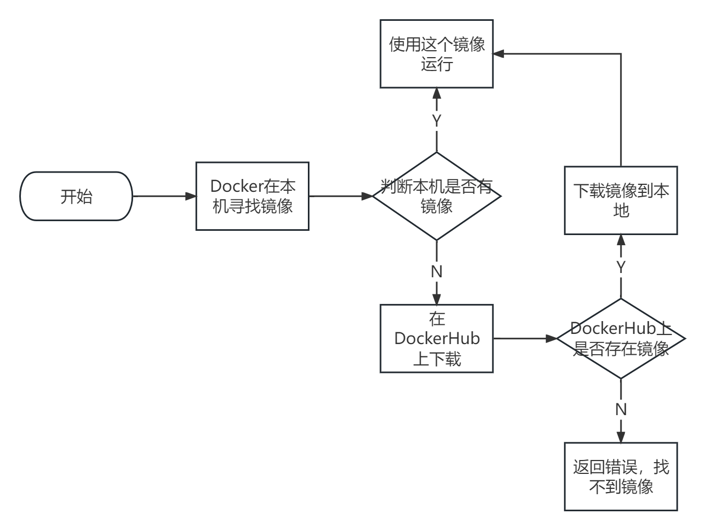
Docker工作原理：
Docker是一个Client-Server结构的系统，Docker的守护进程运行在主机上。通过Socket从客户端访问
DockerServer接收到Docker-Client的指令，就是执行这个命令
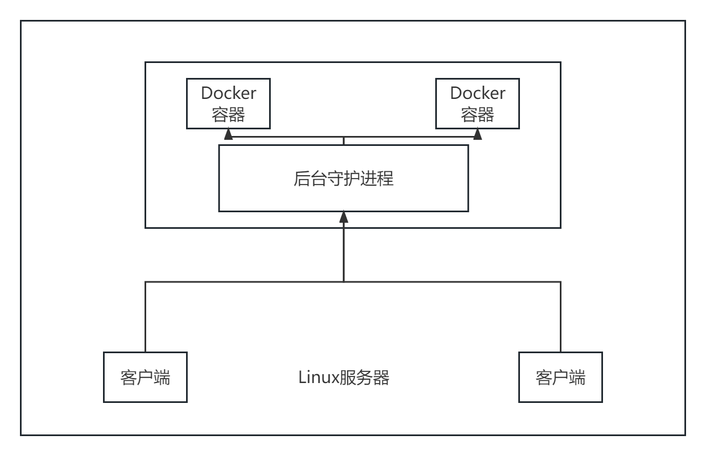
Docker有比虚拟机更少的抽象层
Docker利用宿主机的内核，虚拟机需要是Guest OS
新建一个容器的时候，Docker不需要向虚拟机一样重新加载一个操作系统的内核
查看Docker的版本信息：docker version
查看Docker的系统信息：docker info
帮助命令：docker --help
查看所有本地的主机上的镜像：docker images
[root@iZ2zeilj9g7ro4c0i2813pZ santidadday]# docker images
REPOSITORY TAG IMAGE ID CREATED SIZE
hello-world latest feb5d9fea6a5 17 months ago 13.3kB
# 解释
REPOSITORY 仓库镜像源
TAG 镜像的标签
IMAGE ID 镜像ID
CREATED 镜像的创建时间
SIZE 镜像的大小
-a 显示全部镜像
-q 只显示镜像的id
搜索镜像：docker search 镜像名
-f 过滤条件
例如：所有STARS在3000以上的docker searc mysql --filter=STARS=3000
下载镜像：docker pull 镜像名
指定下载版本：docker pull 镜像名:tag（如果不写tag，默认下载latest）
删除镜像：docker rmi -f 镜像id
-f 全部删除
增加本地镜像tag：docker tag 镜像id 作者名/镜像名:版本
下载一个CentOS测试：docker pull centos
新建容器并启动：docker run [选项]
--name="Name" 容器名字
-d 后台方式启动
-it 使用交互方式运行，进入容器查看内容
-p 指定容器端（-p ip:主机端口:容器端口 -p 主机端口:容器端口（常用） -p 容器端口 容器端口）
-P 随机指定端口
# 测试,启动并进入容器
[root@iZ2zeilj9g7ro4c0i2813pZ santidadday]# docker run -it centos /bin/bash
[root@d9d72d455011 /]
# exit退出当前容器
列出所有正在运行的容器：docker ps
-a 列出当前正在运行的容器+历史运行过的容器
-n=? 显示最近创建的容器
-q 只显示容器的编号
退出容器：
容器停止并退出：exit
容器不停止退出：Ctrl+p+q
删除容器：docker rm 容器id
不能删除正在运行的容器，如果需要删除强制删除则使用docker rm -f
删除所有容器：
docker ps -a -q|xargs docker rmdocker rm -f $(docker ps -aq)启动和停止容器操作：
docker start 容器iddocker restart 容器iddocker stop 容器iddocker kill 容器id后台启动容器：docker run -d 镜像名
在后台启动某容器时，必须要有前台进程，Docker发现没有前台应用，就会自动停止
查看日志：docker logs [选项] 容器名
-tf 显示全部日志
-tf --tail n 显示n条日志
查看容器中的进程信息：docker top 容器id
查看镜像的元数据：docker inspect 容器id
进入当前正在运行的容器：
进入容器后开启一个新的终端：docker exec -it 容器id bashShell
进入容器正在执行的终端：docker attach 容器id
从容器内拷贝到主机上：docker cp 容器id:容器路径 目的主机路径
我们使用卷技术可以实现容器内外数据互传
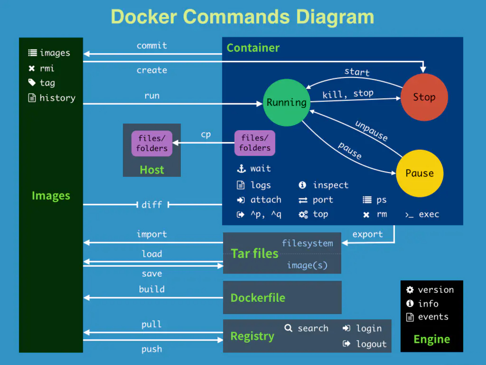
搜索：docker search nginx
拉取：docker pull nginx
后台运行并暴露端口：docker run -d --name nginx01 -p 3344:80 nginx（3344为自定义外网端口，80为容器端口）
端口暴露：
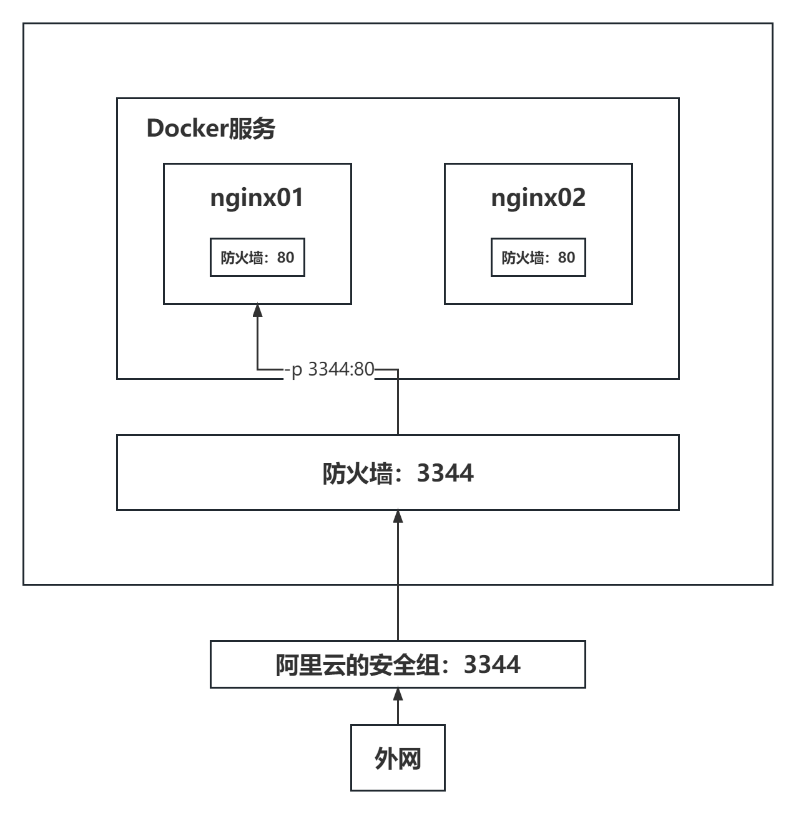
启动elasticsearch：docker run -d --name elasticsearch -p 9200:9200 -p 9300:9300 -e "discovery.type=single-node" elasticsearch:7.6.2
es是十分占用内存空间的，为了解决解决docker启动es后卡死问题，通过增加-e修改配置文件
docker run -d --name elasticsearch -p 9200:9200 -p 9300:9300 -e "discovery.type=single-node" -e ES_JAVA_OPTS="Xms64m -Xmx512" elasticsearch:7.6.2
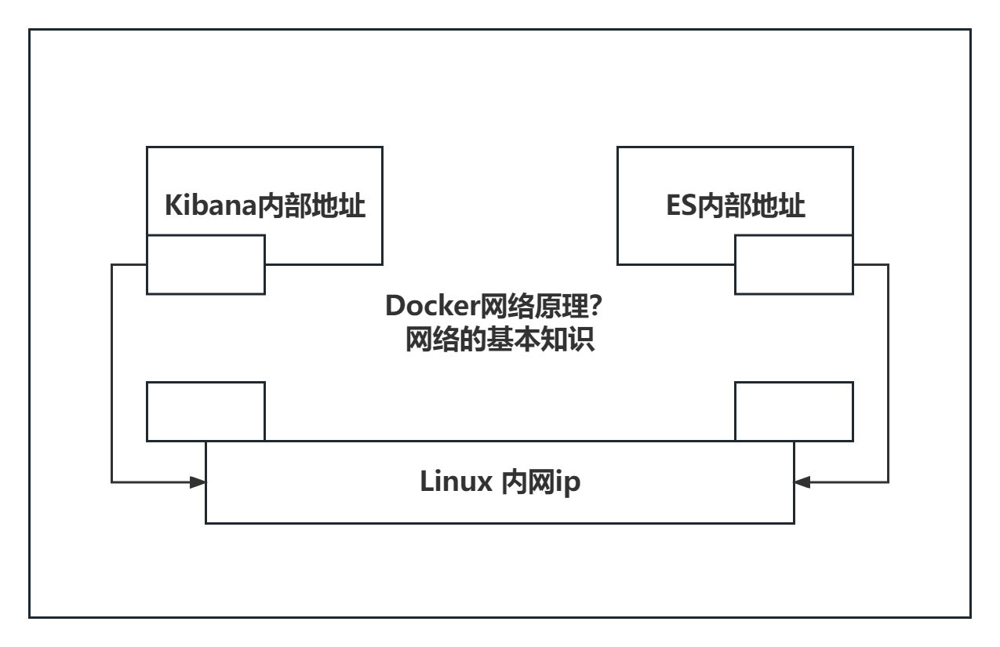
portainer
docker run -d -p 8088:9000 --restart=always -v /var/run/docker.sock:/var/run/docker.sock --privileged=true portainer/portainer
Rancher
portainer：是Docker图形化见面管理工具，提供一个后台面板供我们操作
一般不会使用
镜像是一种轻量级、可执行的独立软件包，用来打包软件运行环境和基于环境开发的软件，它包含运行某些软件所需要的所有内容，包括代码、运行时、库、环境变量和配置文件
所有的应用直接打包称为一个Docker镜像，直接可以运行
得到镜像：
UnionFS（联合文件系统）：是一种分层、轻量级并且高性能的文件系统，它支持对文件系统修改作为一次提交来一层层的叠加，同时可以将不同目录挂载到同一个虚拟文件系统下（unite serveral directories into a single virtual filesystem）。Union文件系统是Docker镜像的基础。镜像可以通过分层来进行继承，基于基础镜像（没有父镜像），可以制作各种具体的应用镜像
特性：一次同时加载多个文件系统，但从外面看起来，只能看到一个文件系统，联合加载会把各层文件系统叠加起来，这样最终的文件系统会包含所有底层的文件和目录
Docker镜像加载原理：
docker的镜像实际上由一层一层的文件系统组成，这种层级的文件系统UnionFS。
bootfs(boot file system)主要包含bootloader和kernel, bootloader主要是引导加载kernel，Linux刚启动时会加载bootfs文件系统，在Docker镜像的最底层是bootfs。这一层与我们典型的Linux/Unix系统是一样的，包含boot加载器和内核。当boot加载完成之后整个内核就都在内存中了，此时内存的使用权已由bootfs转交给内核，此时系统也会卸载bootfs。
rootfs (root file system),在bootfs之上。包含的就是典型 Linux 系统中的 /dev，/proc，/bin，/etc 等标准目录和文件。rootfs就是各种不同的操作系统发行版，比如Ubuntu，Centos等等。
对于一个精简的OS，rootfs可以很小，只需要包含最基本的命令，工具和程序库就可以了，因为底层直接使用Host的kernel，自己只需要提供rootfs就可以了。由此可见对于不同的linux发行版，bootfs基本都是一致的，rootfs会有差别，因此不同发行版可以共用bootfs
所有的Docker镜像都起始于一个基础镜像，当进行修改或增加新的内容时，就会在当前镜像层之上，创建新的镜像
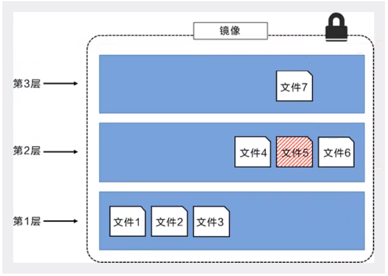
这种情况下，上层镜像层中的文件覆盖了底层镜像层中的文件。这样就使得文件的更新版本作为一个新镜像层添加到镜像当中
Docker 通过存储引擎（新版本采用快照机制）的方式来实现像层堆栈，并保证多像层对外展示为统一的文件系统
Linux 上可用的存储引擎有 AUFS、 Overlay2、 Device Mapper、Btrfs 以及 ZFS。顾名思义，每种存引擎都基于 Linux 中对应的文件系统或者块设备技术，并且每种存储引警都有其独有的性能特点。Docker 在 Windows 上仅支持 windowsfilter一种存储引，该引擎基于 NTFS 文件系统之上实现了分层和 CoW[1]
下图展示了与系统显示相同的三层镜像。所有镜像层堆叠并合并，对外提供统一的视
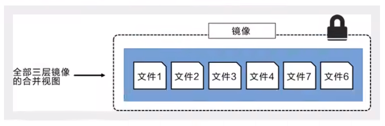
提交容器称为一个新的副本：docker commit
docker commit -m="提交的描述信息" -a="作者" 容器id 目标镜像名:[TAG]
数据在容器中，如果容器删除数据就会丢失。我们需要将数据进行持久化保存
容器之间可以有一个共享的技术！Docker容器中产生的数据同步到本地
数据卷：目录的挂载，将我们的容器内的目录，挂载到Linux上面
容器的持久化和同步操作，容器间也可以数据共享
启用容器并挂载数据卷：docker run -it -v 主机目录:容器目录 镜像名
案例：挂载MySQL：docker run -d --name mysql01 -p 3306:3306 -v /home/mysql:/var/lib/mysql -e MYSQL_ROOT_PASSWORD=123456 mysql:5.7
匿名挂载：docker run -d -P --name nginx01 -v /etc/nginx nginx
在挂载时，指写了容器内的路径，没有些容器外的路径
具名挂载：docker run -d -P --name nginx01 -v j-nginx:/etc/nginx nginx
通过-v 卷名:容器内路径
使用docker volume inspect 卷名查看挂载路径
所有的Docker容器内的卷，没有指定目录的情况下都是在：/var/lib/docker/volumes/xxxx/_date
我们通过具名挂载可以方便的找到我们的一个卷，大多数情况使用的是具名挂载
DockerFile就是用来构建docker镜像的构建文件，命令脚本
通过这个脚本就可以生成镜像，镜像是一层一层的，脚本是一个个的命令，每个命令都是一层镜像
# 创建一个dockerfile1文件
# 文件中的内容 指令(大写)
FROM centos
# 匿名挂载
VOLUME ["volume01", "volume02"]
CMD echo "------end-------"
CMD /bin/bash
在/home/docker-test-volume下：docker build -f dockerfile1 -t santidadday/centos .
假设构建镜像时候没有挂载卷，要手动镜像挂载-v 卷名:容器内路径
例如：多个mysql同步数据
--volume-from 容器名
此处容器名类似于父类，类似于去中心化拷贝
DockerFile是用来构建Docker镜像的文件
构建步骤：
docker build构建一个镜像docker run运行镜像docker push发布镜像（DockerHub、阿里云）基础：
DockerFile是面向开发的，我们以后发布项目，做镜像就需要编写DockerFile文件
Docker镜像逐渐称为企业的交付标准
步骤：
DockerFile：构建文件，定义了一切步骤，源代码
DockerImages：通过DockerFile构建生成镜像，最终发布和运行的产品
Docker容器：容器就是镜像运行起来提供服务的
FROM # 基础镜像,一切从这里开始构件
MAINTAINER # 镜像是谁负责的:姓名+邮箱
RUN # 镜像构建时候需要运行的命令
ADD # 步骤:tomcat镜像,这个tomcat压缩包!添加内容
WORKDIR # 镜像的工作目录
VOLUME # 挂载目录
EXPORT # 指定对外端口
CMD # 指定容器启动时运行的命令,只有最后一条命令生效
ENTRYPOINT # 指定容器启动时运行的命令,可以追加命令
ONBUILD # 当构建一个被继承的DockerFile,这个时候就会运行ONBUILD的指令,触发指令
COPY # 类似ADD,将文件拷贝到镜像中
ENV # 构建的时候设置环境变量
# 编写DockerFile文件
FROM centos:centos7
MAINTAINER santidadday<1393399898@qq.com>
ENV MYPATH /usr/local
WORKDIR $MYPATH
RUN yum -y install vim
RUN yum -y install net-tools
EXPOSE 80
CMD echo $MYPATH
CMD echo "-------end-------"
CMD /bin/bash
# 通过这个文件构建镜像
docker build -f dockerfile文件名 -t 镜像名:[tag]
docker build -f mydockerfile -t mycentos:0.1
# 测试运行
docker run -it mycentos:0.1
FROM centos:centos7
CMD ["ls","-a"]
构建镜像只有最后一个CMD生效
如果我们希望在docker run后追加一个命令（-l）：docker run 镜像名 ls -al
FROM centos:centos7
ENTRYPOINT ["ls","-a"]
在ENTRYPOINT下，可以实现追加效果：docker run 镜像名 -l
需要准备镜像文件：tomcat压缩包，jdk压缩包
编写Dockerfile文件，官方命名，build会自动寻找这个文件，就不需要-f指定了
FROM centos
MAINTAINER santidadday<1393399898@qq.com>
COPY readme.txt /usr/local/readme.txt
ADD jdk-8u11-linux-x64.tar.gz /usr/local/
ADD apache-tomcat-9.0.22.tar.gz /usr/local/
RUN yum -y install vim
ENV MYPATH /usr/local
WORKDIR $MYPATH
ENV JAVA_HOME /usr/1ocal/jdk1.8.0_11
ENV CLASSPATH $JAVA_HOME/lib/dt.jar:$JAVA_HOME/lib/tools.jar
ENV CATALINA_HOME /usr/local/apache-tomcat-9.0.22
ENV CATALINA_BASH /usr/Tocal/apache-tomcat-9.0.22
ENV PATH $PATH:$JAVA_HOME/bin:$CATALINA_HOME/lib:$CATALINA_HOME/bin
EXPOSE 8080
CMD /usr/local/apache-tomcat-9.0,22/bin/startup.sh && tail -F /url/1ocal/apache-tomcat-9.0.22/bin/logs/catalina.out
构建镜像：docker build -t diytomcat .
启动镜像
访问测试
发布项目（我们将容器内挂载到本地，就可以在本地进行编写程序）
地址：https://hub.docker.com/注册自己的账号
确定这个账号可以登录
在我们的服务器上提交自己的镜像
docker login -u 用户名 -p 密码
登录完毕后就可以提交镜像了：docker push 作者名/镜像名:版本
登录阿里云
找到容器镜像服务
创建命名空间
创建容器镜像
浏览阿里云镜像信息
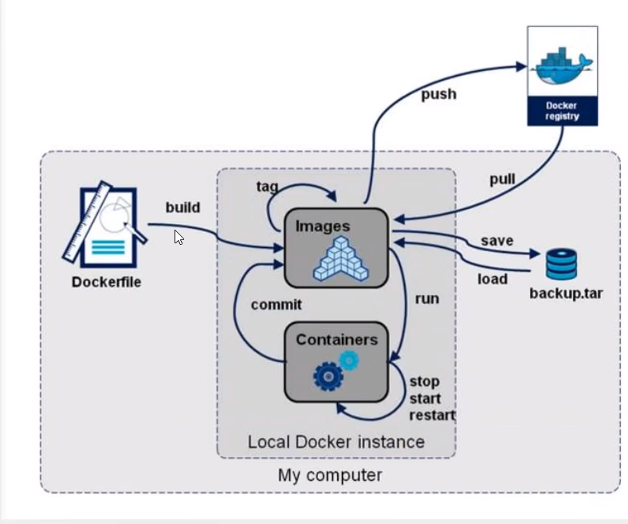
清空之前练习的容器及镜像：docker rm -f $(docker ps -aq) docker rmi -f $(docker images -aq)
查看网络：ip addr，eth0为本机地址，eth1位阿里云内网地址，docker0类似路由器地址（192.168.0.1）
查看容器的内部网络地址：docker exec -it 容器名 ip addr
Linux可以ping通Docker容器内部
原理：
veth-pair，就是一对虚拟设备接口，他们都是成对出现的，一端连着协议，一端彼此相连。我们通常使用这个特性，使其充当一个桥梁，连接各种虚拟网络设备
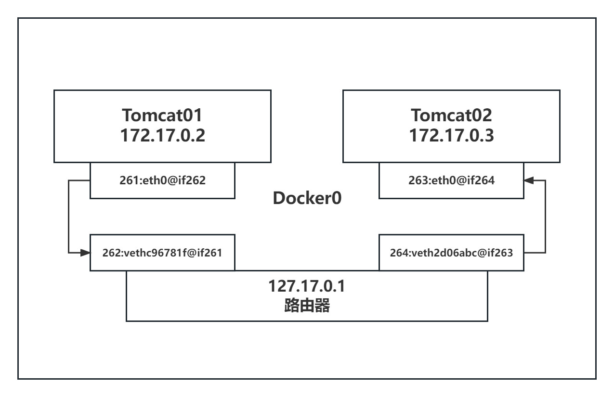
所有的容器不指定网络的情况下，都是docker0路由的，docker会给我们的路由器分配一个默认的可用ip
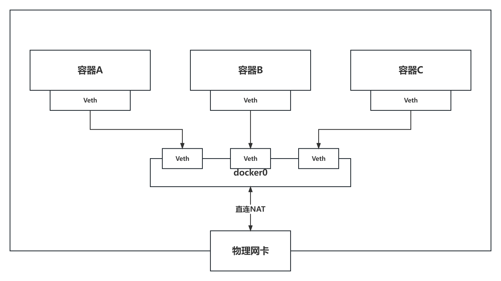
Docker中所有的网络接口都是虚拟的。虚拟的转发效率高（内网传递文件）
容器移除后，对应的网桥就自动删除了
使用场景：项目不重启，数据库ip换了，我们希望可以通过名字进行访问容器
在启动docker时，通过增加选项，例如：docker run -d -P --name tomcat03 --link tomcat02 tomcat
可以在一个Docker容器内通过容器名ping通另一个容器
正向可以ping通不代表反向可以ping通
可以查看到容器的网络内容：docker network inspect 容器id
在/etc/hosts下进行配置：docker exec -it 容器名 cat /etc/hosts
在真实开发环境中，一般不进行使用
查看所有Docker网络信息：docker network ls
网络模式：
docker run -d -P --name tomcat01 --net bridge tomcat
docker run -d -P --name tomcat01 tomcat
创建自己的网络：docker network create --driver bridge --subnet 192.168.0.0/16 --geteway 192.168.0.1 mynet
网络模式：--driver bridge
子网地址：--subnet 192.168.0.0/16
网关：--geteway 192.168.0.1
自定义的网络内部，不同容器可以相互ping通
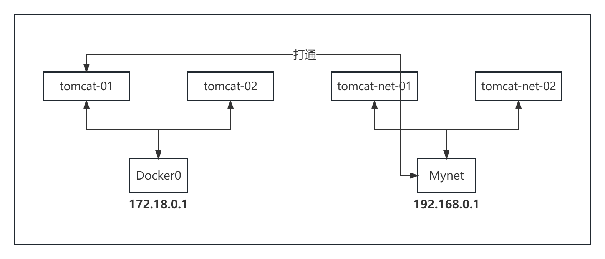
将图示中的tomcat-01与Mynet连通：docker network connect Mynet tomcat-01
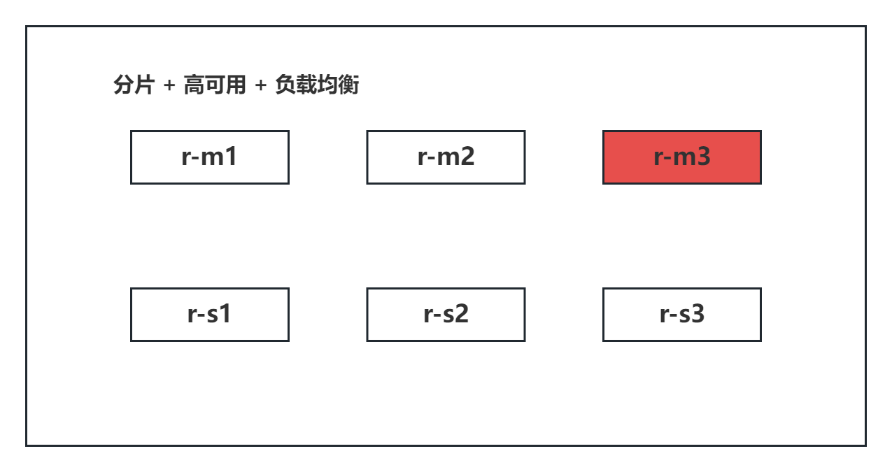
for port in $(seq 1 6); \
do \
mkdir -p /mydata/redis/node-${port}/conf
touch /mydata/redis/node-${port}/conf/redis.conf
cat << EOF >/mydata/redis/node-${port}/conf/redis.conf
port 6379
bind 0.0.0.0
cluster-enabled yes
cluster-config-file nodes.conf
cluster-node-timeout 5000
cluster-announce-ip 172.38.0.1${port}
cluster-announce-port 6379
cluster-announce-bus-port 16379
appendonly yes
EOF
done
docker run -p 6371:6379 -p 16371:6379 --name redis-1 \
-v /mydata/redis/node-1/data:/data \
-v /mydata/redis/node-1/conf/redis.conf:/etc/redis/redis.conf \
-d --net redis --ip 172.38.0.11 redis:5.0.9-alpine3.11 redis-server /etc/redis/redis.conf
docker run -p 6372:6379 -p 16372:6379 --name redis-2 \
-v /mydata/redis/node-2/data:/data \
-v /mydata/redis/node-2/conf/redis.conf:/etc/redis/redis.conf \
-d --net redis --ip 172.38.0.12 redis:5.0.9-alpine3.11 redis-server /etc/redis/redis.conf
docker run -p 6373:6379 -p 16373:6379 --name redis-3 \
-v /mydata/redis/node-3/data:/data \
-v /mydata/redis/node-3/conf/redis.conf:/etc/redis/redis.conf \
-d --net redis --ip 172.38.0.13 redis:5.0.9-alpine3.11 redis-server /etc/redis/redis.conf
docker run -p 6374:6379 -p 16374:6379 --name redis-4 \
-v /mydata/redis/node-4/data:/data \
-v /mydata/redis/node-4/conf/redis.conf:/etc/redis/redis.conf \
-d --net redis --ip 172.38.0.14 redis:5.0.9-alpine3.11 redis-server /etc/redis/redis.conf
docker run -p 6375:6379 -p 16375:6379 --name redis-5 \
-v /mydata/redis/node-5/data:/data \
-v /mydata/redis/node-5/conf/redis.conf:/etc/redis/redis.conf \
-d --net redis --ip 172.38.0.15 redis:5.0.9-alpine3.11 redis-server /etc/redis/redis.conf
docker run -p 6376:6379 -p 16376:6379 --name redis-6 \
-v /mydata/redis/node-6/data:/data \
-v /mydata/redis/node-6/conf/redis.conf:/etc/redis/redis.conf \
-d --net redis --ip 172.38.0.16 redis:5.0.9-alpine3.11 redis-server /etc/redis/redis.conf
docker exec -it redis-1 /bin/sh
# 创建集群
redis-cli --cluster create 172.38.0.11:6379 172.38.0.12:6379 172.38.0.13:6379 172.38.0.14:6379 172.38.0.15:6379 172.38.0.16:6379 --cluster-replicas 1
{kind=link}